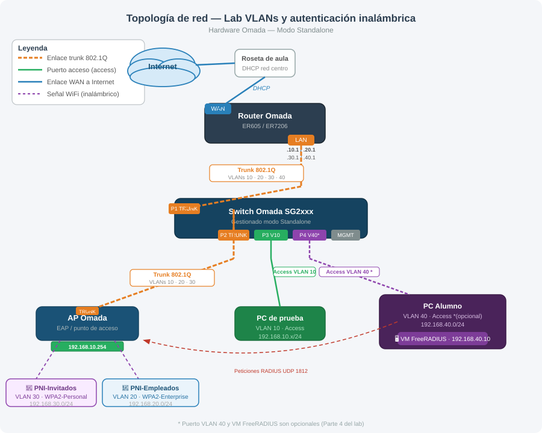

Lab: VLANs y autenticación inalámbrica con hardware Omada¶
- Módulo: PNI — Planificación y Administración de Redes
- Unidad: UT5 — Redes inalámbricas
- Agrupamiento: Grupos de 3-4 alumnos (un grupo dispondrá del hardware real)
- Modalidad: Práctica con hardware real — TP-Link Omada en modo standalone
- Hardware de red utilizado:
- Router VPN Omada ER605 (1 WAN Gigabit fijo + 3 puertos LAN/WAN configurables, por defecto LAN)
- Switch Gigabit PoE+ Omada SG2008P (8 puertos Gigabit, PoE+ 802.3af/at solo en P1-P4, consumo total 62 W, hasta 30 W por puerto)
- Punto de acceso WiFi 6 Omada EAP610 (AX1800) (dual-band 2.4 GHz + 5 GHz, hasta ~1800 Mbps agregados, alimentación PoE+ 802.3at ~11 W o adaptador 12 V/1.5 A, soporta hasta 16 SSIDs)
- Hardware necesario:
- 1 PC para configuración (Partes 1-3, conectado a VLAN 10)
- 1 PC adicional para servidor FreeRADIUS (Parte 4, opcional — VLAN 40 con VM Ubuntu Server)
- Duración estimada: 3-4 horas (partes 1-3) + 1-2 horas adicionales (parte 4, opcional)
- Entrega: consulta al final de la actividad el documento de entrega
Escenario¶
El centro educativo necesita segmentar su red en distintas zonas con diferentes niveles de acceso. Actuaréis como administradores de red y configuraréis la infraestructura completa utilizando hardware real TP-Link Omada en modo standalone.
Topología¶
Internet
│
[Router Omada ER605]
│ (enlace trunk 802.1Q, LAN1 del router ↔ P1 del switch)
[Switch Omada SG2008P]
├─── P2 trunk (PoE+) ──→ [AP Omada EAP610 / AX1800]
│ ├── SSID: "PNI-Invitados-GrupoN" (VLAN 30)
│ └── SSID: "PNI-Empleados-GrupoN" (VLAN 20)
├─── P3 acceso VLAN 10 ──→ PC de administración (para configuración)
└─── P4 acceso VLAN 40 ──→ PC servidor (VM FreeRADIUS) *opcional

Plan de direccionamiento¶
| VLAN | Nombre | Red | Uso |
|---|---|---|---|
| 10 | Gestión / PCs | 192.168.10.0/24 | Equipos de administración |
| 20 | Empleados | 192.168.20.0/24 | WiFi autenticada (RADIUS) |
| 30 | Invitados | 192.168.30.0/24 | WiFi solo con clave compartida |
| 40 | Servidores | 192.168.40.0/24 | VM con FreeRADIUS (opcional) |
Conceptos clave¶
Antes de comenzar, asegúrate de tener claros los siguientes conceptos:
- VLAN (Virtual LAN): segmentación lógica de una red en el mismo switch físico. Cada VLAN es un dominio de broadcast independiente.
- Enlace trunk (802.1Q): puerto que transporta tráfico de varias VLANs etiquetado. Necesario entre el switch y el router, y entre el switch y el AP.
- Inter-VLAN routing: en este escenario lo realiza el router ER605, que tiene una subinterfaz (o interfaz VLAN) por cada red. El switch SG2008P actúa solo en capa 2 (es un switch gestionado L2, no L3).
- DHCP por VLAN: el router asignará direcciones IP de forma independiente a cada VLAN.
- WPA2-Personal: autenticación WiFi con clave compartida (PSK). Todos los usuarios usan la misma contraseña.
- WPA2-Enterprise (802.1X): autenticación WiFi individual mediante usuario y contraseña, validada por un servidor RADIUS externo.
- RADIUS: protocolo cliente-servidor para autenticación centralizada. El AP actúa como cliente RADIUS; el servidor verifica las credenciales.
- PoE (Power over Ethernet): tecnología que permite suministrar alimentación eléctrica a un dispositivo a través del mismo cable de red RJ45, sin necesidad de un cable de corriente separado. El switch "inyecta" la electricidad en el cable y el dispositivo (en este caso el AP) la recibe y se alimenta de ella. Para que funcione, tanto el switch como el dispositivo deben ser compatibles con PoE. En este lab el switch SG2008P ofrece PoE+ (802.3af/at) solo en los puertos 1-4 (consumo total 62 W), y el EAP610 requiere PoE+ 802.3at (~11 W), por lo que debe conectarse a uno de esos cuatro puertos para alimentarse sin adaptador externo.
- Router-on-a-stick: escenario de inter-VLAN routing en el que un único enlace físico trunk conecta el switch con el router. Todas las VLANs viajan etiquetadas por ese enlace; el router tiene una subinterfaz por cada VLAN y es el responsable de enrutar el tráfico entre ellas. El tráfico entre dos VLANs sube al router y vuelve a bajar por el mismo cable, de ahí el nombre. Es el escenario que se usa en este lab: el SG2008P trabaja solo en capa 2 y el ER605 hace todo el routing.
- Modo Standalone vs Controlador Omada: Los dispositivos Omada pueden funcionar en dos modos distintos:
- Standalone: cada dispositivo se gestiona de forma independiente. Accedes a la interfaz web de cada equipo por separado (router, switch, AP), introduces las configuraciones específicas en cada uno, y no hay una plataforma centralizada que coordine todos los dispositivos. Es más simple para labs pequeños o entornos sin necesidad de gestión centralizada, pero requiere acceder a múltiples interfaces. Este lab usa modo standalone.
- Controlador Omada: existe un servidor de control central (Software Controller o Hardware Controller dedicado) que gestiona toda la infraestructura Omada. Los dispositivos se "adoptan" en el controlador y se configuran desde una única plataforma centralizada. Ventajas: gestión unificada, configuración consistente, visibilidad global, roaming sin fisuras en APs. Desventaja: complejidad adicional y requiere que el controlador esté disponible. Típico en despliegues empresariales con múltiples APs o switches distribuidos. En clase de FP es menos común porque requiere infraestructura adicional.
Parte 0 — Acceso a las interfaces de configuración¶
Antes de configurar nada, es necesario acceder a la interfaz web de cada dispositivo. Los dispositivos Omada en modo standalone se gestionan individualmente desde un navegador. El procedimiento de acceso es similar en todos ellos, pero con IPs y credenciales propias de fábrica.
Importante
Cada dispositivo debe configurarse de forma aislada en el primer acceso: conecta el PC directamente al dispositivo, sin pasar por otros equipos ya configurados, para evitar conflictos de direccionamiento.
Acceso al switch¶
Conexión física:
- Conecta el PC al switch mediante un cable de red en cualquier puerto (excepto el que usarás para el trunk al router, que conviene dejar libre por ahora).
- Configura la tarjeta de red del PC con una IP estática en el mismo rango que el switch:
- IP:
192.168.0.X(por ejemplo,192.168.0.100) - Máscara:
255.255.255.0 - Gateway: no es necesario en este paso
- IP:
- Comprueba conectividad con
ping 192.168.0.1antes de abrir el navegador.
Acceso web:
- Abre el navegador y accede a
http://192.168.0.1 - En el primer acceso se solicitará crear una contraseña de administrador. Establece una que el grupo recuerde.
- Las credenciales por defecto son
admin/admin(si el dispositivo no ha sido inicializado antes).
Indicación
Si el switch no responde en 192.168.0.1, puede tener una IP diferente asignada previamente. Consulta al profesor o realiza un reset de fábrica manteniendo pulsado el botón Reset durante 5-10 segundos.
Acceso al router¶
El ER605 tiene 1 puerto WAN Gigabit fijo y 3 puertos LAN/WAN configurables (que de fábrica funcionan como LAN). La administración se hace a través de los puertos LAN.
Conexión física:
- Conecta el PC al router mediante un cable de red en cualquiera de los puertos LAN (no el puerto WAN).
- El router tiene activo el servidor DHCP en la LAN por defecto, por lo que el PC puede obtener IP automáticamente. Deja la tarjeta del PC en DHCP para este paso.
- Comprueba la IP obtenida (comando
ip aen Linux oipconfigen Windows) y anota el gateway — esa es la IP del router.
Acceso web:
- Abre el navegador y accede a
http://192.168.0.1(IP por defecto de los routers Omada). - En el primer acceso se mostrará un asistente de configuración inicial. Puedes completarlo o cerrarlo y acceder directamente a la configuración avanzada.
- Credenciales por defecto:
admin/admin. Se pedirá cambio de contraseña en el primer inicio de sesión.
Indicación
El puerto WAN del ER605 es fijo y está claramente marcado en el chasis. Los otros tres puertos pueden reasignarse como WAN en la configuración (para escenarios multi-WAN), pero de fábrica son LAN y dan acceso a la interfaz web.
Acceso al punto de acceso (AP)¶
NOTA: La Parte 0 explica cómo acceder a cada dispositivo de forma aislada. Para el AP, esto significa conectarlo directamente a un PC sin pasar por el switch. El acceso real al AP en la topología completa ocurre en la Parte 1 (Configuración del punto de acceso).
El AP no tiene puertos LAN propios accesibles desde fuera: se gestiona a través de la red a la que está conectado. El EAP610 de fábrica obtiene IP por DHCP; si no hay servidor DHCP en su segmento (como en esta fase aislada PC ↔ AP), recurre a la IP de respaldo 192.168.0.254.
Conexión física (primera vez — aislado):
- Conecta el adaptador de corriente del AP a la red eléctrica (el PC no suministra PoE, así que en esta fase alimentamos el AP con su adaptador externo).
- Conecta el AP directamente a un PC con un cable de red (sin pasar por el switch).
- Configura el PC con IP estática en el rango
192.168.0.X(por ejemplo,192.168.0.100, máscara255.255.255.0). - Espera 1-2 minutos a que el AP arranque y active su IP de respaldo. Comprueba conectividad con
ping 192.168.0.254.
Acceso web:
- Abre el navegador y accede a
http://192.168.0.254 - Credenciales por defecto:
admin/admin. Se pedirá establecer una nueva contraseña en el primer acceso. - Desde la interfaz standalone del AP podrás configurar los SSIDs (hasta 16 en el EAP610, 8 por banda), seguridad y VLANs de cada red inalámbrica.
Alimentación PoE
El EAP610 requiere PoE+ 802.3at (~11 W). Los puertos P1-P4 del SG2008P son compatibles (PoE 802.3af/at); los puertos P5-P8 no tienen PoE. En la topología final conectaremos el AP a uno de los puertos P1-P4 y podremos retirar su adaptador de corriente. Si accidentalmente lo conectamos a P5-P8, el AP no arrancará a menos que le volvamos a poner el adaptador.
Resumen de acceso a los tres dispositivos¶
| Dispositivo | IP por defecto | IP después Parte 1 | Puerto de gestión | Usuario | Contraseña |
|---|---|---|---|---|---|
| Switch Omada SG2008P | 192.168.0.1 (estática) |
(sin cambios) | Cualquier puerto (1-8) | admin |
admin (primer acceso: crear nueva) |
| Router Omada ER605 | 192.168.0.1 (estática, LAN) |
(sin cambios) | Puertos LAN (no WAN) | admin |
admin (primer acceso: crear nueva) |
| AP Omada EAP610 (AX1800) | DHCP / fallback 192.168.0.254 |
192.168.10.254 (estática tras Parte 1) |
A través del switch (VLAN 10) | admin |
admin (primer acceso: crear nueva) |
Conflicto de IPs
El switch y el router comparten la misma IP por defecto (192.168.0.1). Nunca los conectes entre sí antes de cambiar la IP de gestión de uno de ellos, o habrá conflicto y ninguno responderá correctamente. Configura cada dispositivo de forma aislada primero.
Reset de fábrica¶
Si un dispositivo tiene configuración previa y no responde en su IP por defecto, o las credenciales no funcionan, es necesario restablecerlo a valores de fábrica.
El reset borra toda la configuración
Realiza el reset solo si el profesor lo indica o si el dispositivo es completamente inaccesible. Esta operación es irreversible.
Switch y AP:
- Localiza el botón Reset en el chasis (generalmente en la parte trasera o lateral).
- Con el dispositivo encendido, mantén pulsado el botón con un clip durante 5-10 segundos.
- Los LEDs parpadearán indicando que el proceso ha comenzado.
- Espera 30-60 segundos a que el dispositivo arranque de nuevo.
- Comprueba que responde en su IP por defecto.
Router Omada:
- Localiza el botón Reset en el panel trasero.
- Con el router encendido, mantenlo pulsado durante 5 segundos hasta que el LED del sistema parpadee.
- El router se reiniciará automáticamente. Espera 60-90 segundos hasta que los LEDs se estabilicen.
- Comprueba acceso en
http://192.168.0.1.
Indicación
El EAP610 puede requerir mantener el botón Reset hasta 10 segundos hasta que el LED parpadee en ámbar. Consulta la guía rápida impresa incluida con el dispositivo si tienes dudas.
Parte 1 — Configuración del punto de acceso¶
En este paso configuramos los SSIDs del AP mientras aún está aislado del switch, con su IP de fábrica accesible directamente desde el PC de administración. Esto nos permite también cambiar su IP de gestión a VLAN 10 antes de integrarlo en la topología final.
Equipos en esta parte
- PC de administración: El equipo que usarás durante las Partes 1, 2 y 3 para configurar router, switch y AP.
- PC servidor (opcional): Equipo separado que usarás en la Parte 4 para instalar VirtualBox y la VM con FreeRADIUS.
Conexión física para este paso¶
El PC no tiene PoE, por lo que el AP necesita alimentación eléctrica externa en este paso.
- Conecta el adaptador de corriente del AP a la red eléctrica.
- Conecta el AP al PC de administración directamente con un cable de red (sin pasar por el switch).
- Configura la tarjeta del PC con IP estática:
- IP:
192.168.0.100 - Máscara:
255.255.255.0 - Gateway: no necesario
- IP:
- Comprueba conectividad:
ping 192.168.0.254 - Accede a
http://192.168.0.254con las credenciales establecidas en la Parte 0.
Configuración de SSIDs¶
Añade el número de grupo al nombre de la SSID
Como en el aula habrá varios grupos configurando AP al mismo tiempo, los SSIDs deben incluir un identificador de grupo para no solaparse en el aire. Sustituye N por el número de tu grupo (por ejemplo PNI-Invitados-Grupo1, PNI-Empleados-Grupo2...). En todas las menciones posteriores de este lab se asume este patrón.
-
Crea la SSID "PNI-Invitados-GrupoN":
- Seguridad: WPA2-Personal (clave compartida)
- VLAN: 30
- Establece una contraseña de acceso
-
Crea la SSID "PNI-Empleados-GrupoN":
- Seguridad: WPA2-Enterprise (802.1X)
- VLAN: 20
- IP del servidor RADIUS: 192.168.40.10 (se configurará en la Parte 4)
- Puerto RADIUS: 1812
- Secret compartido (Pre-Shared Secret): Define una contraseña compleja que recordarás. Este mismo secret deberá usarse en la configuración del servidor FreeRADIUS en la Parte 4.4.
Orden importante
La SSID de empleados no funcionará hasta completar la Parte 4. Puedes crearla ahora y dejarla desactivada.
Cambio de IP de gestión¶
Antes de conectar el AP al switch hay que cambiar su IP de gestión para que quede en VLAN 10. De lo contrario, cuando el switch esté configurado con VLANs, el PC (en VLAN 10, rango 192.168.10.x) no podrá alcanzar la IP de fábrica del AP (192.168.0.254).
- Ve a Settings → Management (o sección equivalente de tu firmware).
- Cambia la configuración IP del AP:
- IP:
192.168.10.254 - Máscara:
255.255.255.0 - Gateway:
192.168.10.1
- IP:
- Guarda y espera a que el AP se reinicie con la nueva IP.
- Comprueba el acceso en
http://192.168.10.254antes de continuar.
¿Por qué VLAN 10 para la gestión?
Cuando el AP se conecte al switch en la Parte 2, el puerto será trunk con VLANs 10, 20 y 30. El AP usará cada VLAN para un propósito distinto: - VLAN 10 — tráfico de gestión (acceso a la interfaz web del AP) - VLAN 20 — tráfico inalámbrico de la SSID "PNI-Empleados-GrupoN" - VLAN 30 — tráfico inalámbrico de la SSID "PNI-Invitados-GrupoN"
Al asignar la IP de gestión a VLAN 10, el AP seguirá siendo accesible desde el PC (que también está en VLAN 10) después de integrar toda la topología.
Conexión al switch (final de esta parte)¶
Una vez configurado el AP y verificada la nueva IP de gestión:
- Desconecta el adaptador de corriente del AP.
- Desconecta el cable entre el AP y el PC.
- Conecta el AP al switch mediante un cable de red en el puerto trunk que configurarás en la Parte 2. A partir de ahora el switch suministrará alimentación al AP a través del cable de red mediante PoE — no necesitará adaptador de corriente.
PoE desde el switch
El SG2008P ofrece PoE+ solo en los puertos P1-P4 (consumo total 62 W). En este lab el AP va en P2 (PoE+, ~11 W) y recibirá corriente por el cable de red sin necesidad de adaptador externo. No conectes el AP a P5-P8: no tienen PoE y el AP no arrancará.
Parte 2 — Configuración del switch¶
Conexión física antes de configurar¶
En este momento la topología es:
Router ← (conectar cable trunk aquí)
Switch ← (ya tienes el AP aquí del final de Parte 1)
← (aquí conectarás el PC de administración)
Antes de empezar:
- Conecta un cable desde el puerto LAN del router hasta el puerto que designarás como P1 TRUNK del switch (por ejemplo, puerto 1 del switch).
- Desconecta el PC de administración del AP. Ahora conecta el PC de administración al switch en cualquier puerto que no sea P1 (por ejemplo, puerto 3, 4 o 5).
- Configura la tarjeta del PC con IP estática:
- IP:
192.168.0.100 - Máscara:
255.255.255.0 - Gateway: no necesario por ahora
Configuración de VLANs y puertos¶
Accede a la interfaz de administración del switch en modo standalone (en http://192.168.0.1) y crea las VLANs necesarias según el plan de direccionamiento (IDs: 10, 20, 30, 40).
Cómo se configuran los puertos trunk y acceso en el SG2008P
En los switches Omada SG2xxx (incluido el SG2008P) no existe un botón explícito "modo trunk" o "modo acceso" por puerto. El modo de cada puerto se define de forma implícita al añadir los puertos a cada VLAN como Tagged o Untagged desde L2 Features → 802.1Q VLAN:
- Puerto trunk (transporta varias VLANs etiquetadas): se añade a cada VLAN que deba transportar marcándolo como Tagged. El tráfico sale con etiqueta 802.1Q, que el dispositivo del otro extremo (router o AP) usa para distinguir las VLANs.
- Puerto de acceso (una sola VLAN, sin etiquetar): se añade a esa única VLAN marcándolo como Untagged, y además se configura su PVID con ese VLAN ID (pestaña PVID). El PC conectado recibe los paquetes sin etiqueta, como si estuviera en una red normal.
Un puerto no debe aparecer como Untagged en más de una VLAN. Si lo añades Untagged a la VLAN correcta y olvidas quitarlo de la VLAN 1 por defecto, ambas competirán.
Aplicando lo anterior a nuestra topología, la configuración por VLAN queda así:
| VLAN | Tagged (trunk) | Untagged (acceso) |
|---|---|---|
| 10 (Gestión) | P1 (router), P2 (AP) | P3 (PC admin) |
| 20 (Empleados) | P1 (router), P2 (AP) | — |
| 30 (Invitados) | P1 (router), P2 (AP) | — |
| 40 (Servidores) | P1 (router) | P4 (PC servidor, opcional) |
Además, configura el PVID de cada puerto de acceso para que el tráfico entrante sin etiqueta se asigne a la VLAN correcta:
- PVID de P3 = 10 (PC admin → VLAN 10).
- PVID de P4 = 40 (PC servidor → VLAN 40, si se utiliza).
- P1 y P2 son trunk: su PVID es menos relevante porque todo el tráfico útil va etiquetado; déjalos en el valor por defecto (1) salvo indicación contraria.
Pasos concretos en la interfaz:
- Ve a L2 Features → 802.1Q VLAN → VLAN Config y crea las VLANs 10, 20, 30 y 40.
- Para cada VLAN, edítala y añade los puertos con su tipo (Tagged o Untagged) según la tabla anterior.
- Ve a la pestaña Port Config (o PVID Config) y ajusta el PVID de P3 y P4.
- Quita los puertos P3 y P4 de la VLAN 1 por defecto para evitar que aparezcan Untagged en dos VLANs a la vez.
- Verifica que la tabla de VLANs refleja exactamente el cuadro anterior antes de continuar.
Cables conectados en esta parte
Al final de la Parte 2 debe haber tres cables conectados al switch: - Puerto 1 (P1): Cable del router (trunk) - Puerto 2 (P2): Cable del AP (trunk) - Puerto 3 (P3): Cable del PC de administración (access VLAN 10)
Parte 3 — Configuración del router¶
3.1 — Conexión a Internet¶
El router obtendrá su configuración de red exterior (IP pública de aula, gateway y DNS) automáticamente desde la red del centro a través del puerto WAN.
Estado actual de cables
Al empezar la Parte 3 ya tienes: - Cable P1 TRUNK del switch al puerto LAN del router (ya conectado en Parte 2) - AP conectado a P2 TRUNK del switch - PC de administración conectado a P3 ACCESS VLAN 10 del switch
Conexión del puerto WAN:
- Localiza el puerto WAN del router (marcado como
WANo con icono de globo en el chasis del ER605). - Conecta un cable de red desde el puerto WAN del router hasta una de las rosetas de red del aula (roseta de Internet).
- El puerto WAN es diferente de los puertos LAN — no confundas.
- Accede a la interfaz web del router y comprueba que el puerto WAN ha obtenido IP automáticamente: ve a Status → WAN/LAN. Debes ver una IP asignada, un gateway y DNS válidos.
- Verifica acceso a Internet desde el propio router haciendo un ping de prueba desde Preferences → Diagnostics → Ping a
8.8.8.8.
Indicación
Los routers Omada tienen el puerto WAN configurado en DHCP por defecto, por lo que no es necesario modificar nada en ese puerto si la roseta de aula proporciona DHCP, que es el caso habitual.
Sin IP en el WAN
Si el puerto WAN no obtiene IP, verifica que el cable está conectado a la roseta correcta y que esta tiene conectividad activa. Consulta al profesor si el problema persiste.
3.2 — Configuración de interfaces LAN y DHCP¶
Accede a la interfaz de administración del router y configura el enrutamiento inter-VLAN y los servicios DHCP:
- Crea una interfaz LAN por cada VLAN con la IP de gateway indicada en el plan de direccionamiento.
- Activa el servidor DHCP en cada interfaz con un rango apropiado.
- Verifica la conectividad desde el PC de prueba: debe obtener IP de VLAN 10 y tener acceso a Internet.
- Comprueba que el router puede alcanzar todas las subredes (tabla de rutas).
Indicación ER605
Las interfaces VLAN se crean desde Network → LAN. Haz clic en +Add para añadir una nueva red LAN e introduce el VLAN ID, la IP del gateway y la máscara. El servidor DHCP se configura en la pestaña DHCP Server dentro de cada LAN. Para ver la tabla de rutas activa ve a Network → Routing.
Parte 4 — Servidor RADIUS con FreeRADIUS (opcional — ampliación)¶
En el PC servidor (equipo diferente al PC de administración usado en Partes 1-3), instala una máquina virtual con Ubuntu Server 24.04 LTS en VirtualBox y configura un servidor FreeRADIUS básico que autentique los usuarios de la SSID "PNI-Empleados-GrupoN".
Requisito previo: Completar Partes 1-3
No inicies la Parte 4 hasta haber completado y verificado las Partes 1, 2 y 3. El PC servidor necesita acceso a Internet a través del router (VLAN 40) para descargar paquetes de Ubuntu. Si el router no está configurado con DHCP y rutas en VLAN 40, la VM no tendrá conectividad.
Cambio de equipo en esta parte
Prepara un segundo PC (PC servidor) diferente al PC de administración. Este PC debe estar conectado físicamente al puerto de acceso VLAN 40 del switch. De esta forma, la VM en VirtualBox (con adaptador puente) obtendrá una IP en rango 192.168.40.x y tendrá acceso a Internet a través del router.
Paso 4.1 — Preparar la máquina virtual¶
Conexión física:
- Verifica que el PC servidor está conectado físicamente al puerto de acceso VLAN 40 del switch (puerto P4).
- Comprueba que el router está completamente configurado (Partes 1-3 terminadas) con:
- DHCP activo en VLAN 40 (rango 192.168.40.x)
- Interfaz VLAN 40 con IP 192.168.40.1
- Acceso a Internet verificado
Creación de la VM:
- En el PC servidor, clona la OVA con la plantilla de Ubuntu Server usada en otras actividades o crea una nueva VM en VirtualBox con los siguientes parámetros mínimos:
- Sistema operativo: Ubuntu Server 24.04 LTS (64 bits)
- RAM: 1024 MB
- Disco: 10 GB
- Adaptador de red: Adaptador puente (Bridged) sobre la interfaz de red física del equipo (la que está conectada al puerto de acceso VLAN 40 del switch)
Cómo obtiene Internet la VM
Cuando arranques la VM con adaptador puente, obtendrá una IP automáticamente por DHCP del servidor del router en VLAN 40 (rango 192.168.40.x). A través del router, la VM tendrá acceso a Internet para descargar paquetes de Ubuntu y FreeRADIUS.
-
Si es una OVA clonada, actualiza el sistema operativo. Si es una máquina nueva, instala Ubuntu Server siguiendo el asistente. Durante la instalación:
- Selecciona instalación mínima (no es necesario instalar ningún paquete adicional en este paso)
- Crea un usuario con nombre y contraseña que recuerdes (por ejemplo, usuario
user)
-
Una vez instalado, inicia sesión en la consola de la VM.
Paso 4.2 — Configurar la IP estática en la VM¶
La VM debe tener una IP fija en la VLAN 40 para que el AP sepa siempre a dónde enviar las peticiones RADIUS.
-
Identifica el nombre de la interfaz de red:
Anota el nombre de la interfaz (habitualmente
enp0s3o similar). -
Edita la configuración de red con
netplan. Abre el fichero de configuración: -
Sustituye el contenido por lo siguiente, adaptando el nombre de interfaz:
-
Aplica la configuración:
-
Verifica que la IP es correcta y que hay conectividad con el router:
Paso 4.3 — Instalar FreeRADIUS¶
-
Actualiza los repositorios e instala el paquete:
-
Comprueba que el servicio está activo:
El estado debe mostrar
active (running). -
Activa el inicio automático al arrancar:
Paso 4.4 — Registrar el AP como cliente RADIUS¶
FreeRADIUS necesita saber qué dispositivos tienen permiso para enviarle peticiones de autenticación. El AP actúa como cliente RADIUS (también llamado NAS — Network Access Server).
-
Abre el fichero de clientes:
-
Al final del fichero, añade el bloque siguiente con la IP de gestión del AP y el secret que configuraste en la Parte 1:
client ap-omada { ipaddr = 192.168.10.254 secret = clave_secreta_compartida shortname = AP-Omada-Lab nas_type = other }La clave secreta debe coincidir exactamente
El valor de
secretaquí debe ser idéntico al que introdujiste en la configuración 802.1X del AP. Un carácter diferente impedirá la autenticación. -
Guarda y cierra el fichero (
Ctrl+O,Enter,Ctrl+X).
Paso 4.5 — Crear usuarios de prueba¶
FreeRADIUS permite definir usuarios locales en un fichero de texto plano, suficiente para este lab.
-
Abre el fichero de usuarios:
-
Al principio del fichero (antes de las líneas comentadas), añade los usuarios con el formato siguiente:
Añade tantos usuarios como el grupo necesite para las pruebas.
-
Guarda y cierra el fichero.
Paso 4.6 — Reiniciar y probar el servidor¶
-
Reinicia FreeRADIUS para que cargue los cambios:
-
Comprueba que no hay errores en los logs:
-
Realiza una prueba local de autenticación con la herramienta
radtest:La respuesta debe incluir
Access-Accept. Si apareceAccess-Reject, revisa el ficherousers.
Indicación
El secret testing123 es el que FreeRADIUS asigna por defecto al cliente localhost. Solo se usa para la prueba local; no es el secret del AP.
Paso 4.7 — Verificar autenticación real desde el AP¶
- Activa la SSID "PNI-Empleados-GrupoN" en la interfaz del AP (que dejaste desactivada en la Parte 3).
- Desde un móvil o portátil, conéctate a la red "PNI-Empleados-GrupoN":
- Método de autenticación: WPA2-Enterprise / EAP-TTLS o PEAP (según soporte del cliente)
- Usuario:
alumno1 - Contraseña:
password1
- Si la conexión se establece correctamente, el dispositivo obtendrá una IP del rango VLAN 20.
-
Consulta los logs de FreeRADIUS en tiempo real para ver el proceso de autenticación:
Deberías ver una línea con
Access-Accepty el nombre de usuario autenticado.
Sobre el método EAP
Para este lab, FreeRADIUS está configurado con los métodos EAP por defecto (PEAP-MSCHAPv2). La mayoría de dispositivos móviles y portátiles con Windows/Linux lo soportan sin configuración adicional. En iOS puede ser necesario aceptar un certificado autofirmado en el primer acceso.
Verificación final¶
Antes de dar la práctica por completada, el grupo debe demostrar:
- Un dispositivo conectado al puerto de VLAN 10 obtiene IP y accede a Internet.
- Un móvil se conecta a "PNI-Invitados-GrupoN" con la clave compartida y obtiene IP de VLAN 30.
- Las VLANs 10 y 30 no se ven entre sí (comprobar con ping).
- (Parte 4) Un móvil se autentica en "PNI-Empleados-GrupoN" con usuario y contraseña individuales.
- (Parte 4) El log de FreeRADIUS muestra el acceso aceptado.
Entrega¶
Documentad en un informe breve (formato libre):
- Debe incluir el nombre de todos los miembros del grupo
- Topología final con IPs reales utilizadas.
- Capturas de pantalla de la configuración de cada dispositivo.
- Resultado de las comprobaciones de la verificación final.
- (Parte 4) Captura del log de FreeRADIUS con una autenticación exitosa.